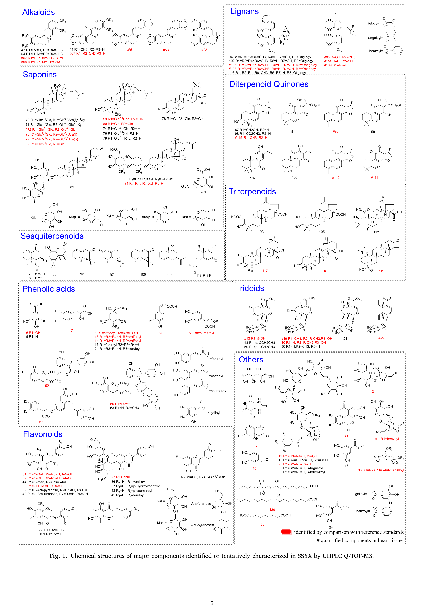

線形置換法による多成分定量に基づく参松養心カプセル(SSYX)のQ-marker解明

<!-- 方針: ほぼ全訳＋必要に応じた補足。原文構成に沿って訳出。「> 補足:」は訳者注。 -->
書誌情報
- 原題: Insights into Q-marker of Shensong Yangxin capsule in treating cardiac arrhythmias based on a linear substitution strategy in quantification of multiple components
- 著者: Zi-ting Li, Peng-cheng Zhao, Xiao-xing Wang, Lv-qi Xie, Yan Li, Shui-xing Zhang, Xi-yang Tang, Yi Dai（曁南大学薬学院 漢方・天然物研究所／曁南大学第一附属医院 ほか, 中国）
- 掲載: Phytomedicine 138 (2025) 156382. https://doi.org/10.1016/j.phymed.2025.156382
- インパクトファクター: 約7.9（Phytomedicine, JCR 2024 / Clarivate。出典により6.7〜8.8と幅があり要確認）
- 受理経過: 2025年オンライン公開（Phytomedicine 138巻）
補足: SSYX = 参松養心カプセル（Shensong Yangxin capsule。心房細動など不整脈に用いられ、国家基本薬物に収載）。LSM = 線形置換法、ESM = 外部標準法、IRS = 内部参照標準、MRM = 多重反応モニタリング。本論文は分析法開発＋in vivo/組織分布＋薬効モデルを統合した研究論文。
要旨（Abstract）
背景: Quality marker（Q-marker）の概念は、漢方（伝統中国医学, TCM）方剤の安全性と有効性を確保するための重要なツールとして登場した。しかし、特に標準品（reference standard）が乏しいことに起因して、Q-markerの同定と実用的応用には依然として大きな課題が残されている。
目的: 本研究は、化学プロファイリング・標的組織分布・in vivoハイスループットスクリーニングモデルの多次元的統合を達成することで、参松養心カプセル（Shensong Yangxin Capsule, SSYX）のQ-markerを効果的に同定し、あわせて多成分定量のための 線形置換戦略（linear substitution strategy） を提案することを目的とした。
方法: まず、UHPLC/Q-TOF MSを用いてSSYXの化学成分を検出・系統的に特性化した。次に、心臓分布研究を通じて、SSYX経口投与後に生体内で高曝露を示す成分を同定した。第三に、ハイスループット不整脈ゼブラフィッシュモデルを用いて鍵成分をさらにスクリーニングした。最後に、上記の研究を統合して潜在的Q-markerを選定し、UHPLC-TQ-MSを用いてQ-markerの定量法を開発した。
結果: 化学プロファイリング・心臓組織分布・抗不整脈活性の結果を、特異性（specificity）・処方から生体内への追跡性（traceability from prescription to in vivo）・有効性（effectiveness）・配合適合性（prescription compatibility） の4つの性質に統合し、その結果 30成分 をSSYXの潜在的Q-markerとして同定した。続いて、これら30成分について外部標準法（external standard method, ESM）を開発し、市販SSYXの10バッチの分析に適用した。加えて、SSYXをケーススタディとして、線形置換法（linear substitution method, LSM） による多マーカー検出の実現可能性を初めて検討した。これは、単一標準溶液と多成分混合標準溶液における化合物の線形方程式の安定性に基づくものである。2つの線形的に安定な物質 を用いることでSSYX中の 30成分の同時定量 を達成し、標準物質の使用量を大幅に削減しつつ測定可能性と簡便性を維持した。LSMとESMの比較では、両法で算出した成分含量に有意差はなく、相対誤差は ±4%以内 であった。
結論: 本研究の結果は、6つの主要成分（six key elements）を含む30成分がSSYXのQ-markerとみなしうることを示した。さらにLSM戦略は、TCM方剤の多指標成分の品質管理に向けた、環境に優しく簡便な手法を開発するための新規アプローチを提供した。
キーワード: Quality marker／伝統中国医学方剤／参松養心カプセル／組織分布／線形置換法
略語: AUC=曲線下面積、IS=内部標準、LSM=線形置換法、MRM=多重反応モニタリング、QC=品質管理、Q-TOF MS=四重極飛行時間型質量分析、RSD=相対標準偏差、SSYX=参松養心カプセル、TCM=伝統中国医学、TQ MS=三連四重極質量分析、UHPLC=超高速液体クロマトグラフィー。
1. 序論（Introduction）
伝統中国医学方剤（TCM方剤）は中華民族の国粋とされ、数千年にわたって患者を治療するための薬材として用いられてきた（Li and Le, 2021）。方剤はTCMにおける臨床投薬の主要な形態であり、複雑な組成と多様な構造を特徴とし、成分の種類ごとに含量と活性に大きな変動がある。TCM方剤の現行の品質管理法は、個々の中薬材の薬局方基準に依拠することが多く、それらはしばしば特徴的成分あるいは一部の活性成分のみを対象とし、TCM方剤の臨床効果を十分には反映できない（Lau et al., 2019）。中医薬体系の特性を考慮し、劉昌孝（Academician Liu）は2016年、TCM方剤の品質と品質管理を高めるためにQuality Marker（Q-marker）という新概念を提唱した（Liu, 2017）。Q-marker選定における5つの鍵要因、すなわち 有効性・特異性・伝達性と追跡性（transferability and traceability）・測定可能性（measurability）・配合適合性 が明らかにされた。これらの要因は、有効性と安全性の相関を反映するだけでなく、中薬成分の特異性と可変性をも反映するものである（Ge et al., 2023; Hu et al., 2024; Liu, 2016; Xia et al., 2024）。しかしこの分野で難題となるのは、多数の化学成分から構成されるTCM方剤において、いかにして代表的かつ有効なQ-markerをスクリーニングするかという点である。
TCM方剤が多成分・多標的を含む全体論的（holistic）機序を通じて治療効果を発揮することはよく認識されている（Zhao et al., 2023）。したがって、包括的な品質管理のために複数の生物活性成分を定量する信頼性の高い手法を確立することが一般に受け入れられてきた（Lu et al., 2022; Li et al., 2021）。しかし定量的測定には通常、標準品が必要であり、これら化合物の希少性がTCM品質管理にとって大きな障害となっていた。そのため、この制約に対処するだけでなく、複数成分の同時測定を可能にする代替手法が緊急に求められている。
単一マーカーによる多成分定量分析（Quantitative analysis of multi-components by single-marker, QAMS）は、1本の内部参照標準（internal reference standard, IRS）のみで試料中の全被検物を測定できる、経済的で環境に優しい多成分同時測定法である（Hou et al., 2011）。QAMS法は一般に内部標準法の原理に基づき、ある成分をIRSとして、IRSと他成分の応答と濃度から、両者が化学構造上類似していると仮定して相対補正係数（relative correction factors, RCFs）を算出する（Cai et al., 2023; Luo et al., 2023）。RCFsはQAMSにおける決定的なパラメータであり、手法の定量精度を直接左右する（Li et al., 2016）。しかし、大半のTCM方剤はこれらの要件を満たさない。同一のIRSを用いて異なる化学成分を測定するとRCF値に大きな変動が生じ、QAMS法による定量の精度を著しく損なう（Hu et al., 2019）。本研究では、線形置換法（LSM） を初めて提案・検証した。LSMは、単一標準溶液と多成分混合標準溶液における化合物の線形方程式の安定性に基づき、従来のQAMSからの進歩を表すものである。本法は、TCM方剤中の多様な構造型の成分の測定、ならびに線形範囲と体系的方法論を重視し、操作誤差を最小化して分析技術の精度を高めることを目指した。
参松養心カプセル（SSYX）は不整脈治療に広く用いられるTCM方剤であり、中国の国家基本薬物リスト（National Essential Medicine List）に収載されている。最近の研究では、持続性心房細動に対する高周波カテーテルアブレーション後にSSYXで治療すると、再発性心房頻拍性不整脈の発生率が低下することが報告された（Huang et al., 2024）。SSYXは12種の中薬材を含む。SSYX中の個々の生薬については植物化学的研究が行われてきたが（Li et al., 2009; Sun et al., 2023; Zhang et al., 2016）、方剤の成分に関する包括的研究はこれまで行われてこなかった。加えて、現行のSSYXの品質管理は個々の中薬材（人参 GINSENG RADIX ET RHIZOMA と 山茱萸 CORNI FRUCTUS）の薬局方基準に依拠し、ginsenoside Rg・ginsenoside Re・loganin のみを品質指標としており、SSYXの臨床効果を十分に反映できていない。さらに、人参—山茱萸の薬対（medicine pair）は心疾患治療に広く用いられ、参芪益気カプセル（Shenqi Yiqi capsules, Niu et al., 2014）や人参根固丸（Ginseng Root-Securing pill, Ye, 2017）など各種のTCM方剤に組み込まれている。したがって、ginsenoside Rg・ginsenoside Re・loganin をSSYXの品質指標とすることには、特異性と臨床効果との相関が欠けているように思われた。臨床的に有効かつ広く用いられるTCM方剤として、SSYXの全体的な品質管理基準を高めるには、その理想的なQ-markerを同定することが不可欠であった。
本研究では、化学プロファイリング・標的組織分布・in vivoハイスループットスクリーニングモデルの組み合わせにより、SSYXのQ-markerを同定する戦略を提案した。さらに、新規の多成分定量法である線形置換法（LSM）を用いてQ-markerの定量を行った。これは、TCM方剤中の多指標成分の品質管理に向けた、環境に優しく簡便な手法を開発するための新たなアプローチを提供するものである。
2. 材料と方法（Material and Methods）
2.1 試薬
本研究では、参松養心カプセル（ロット番号 2010023）を石家荘以嶺薬業（Shijiazhuang YiLing Pharmaceutical Co., Ltd., 中国・北京）から入手した。標準品として、longanin・morroniside・tanshinone IIA・cryptotanshinone・deoxyschisandrin・schisanhenol・schisantherin A・tanshinone I・schisantherin B・coptisine・epiberberine・jatrorrhizine・palmatine・berberine・schisandrin・spinosin・dihydrotanshinone I・sweroside を成都普思生物科技（Chengdu Push Bio-Technology Co., Ltd., 中国・成都）から購入した。paeoniflorin・quercitrin・protocatechuic aldehyde（プロトカテク酸アルデヒド）・magnoflorine・dexamethasone（内部標準）は成都克洛玛生物科技（Chengdu Chroma-Biotechnology Co., Ltd., 中国・成都）から調達した。ginsenoside Rb1 化合物は自家で単離し、NMRおよびMSスペクトル解析により特性化した。各化合物の純度はHPLC分析により98%以上であった。HPLCグレードのメタノールおよびエタノールはMREDA Technology Inc.（米国）から、LC-MSグレードのアセトニトリルおよび水はFisher Scientific（米国ニュージャージー州Fair Lawn）から入手した。LC-MSグレードのギ酸はSigma-Aldrich（米国セントルイス）から入手した。
2.2 試料調製
化学プロファイリング用試料: SSYX粉末1 gを80%（v/v）メタノール25 mLに懸濁し、室温で20分間超音波抽出した。得られた混合物を4℃・14,000 rpmで20分間遠心した。上清2 μLをUHPLC/Q-TOF MSシステムに注入した。
心臓組織分布研究用試料: longanin・morroniside・tanshinone IIA・cryptotanshinone・deoxyschisandrin・schisanhenol・schisantherin A・tanshinone I・schisantherin B・coptisine・epiberberine・jatrorrhizine・palmatine・berberine・schisandrin・dihydrotanshinone I・sweroside・magnoflorine・ginsenoside Rb1 および dexamethasone（IS）を正確に秤量し、メタノールに溶解して0.1 mg/mL溶液を調製した。19被検物からなる作業溶液は、各ストック溶液を混合しメタノールで希釈して所望濃度に調整した。IS作業溶液はメタノールで4 ng/mLに調製した。全溶液は4℃・遮光下で保存した。検量標準は、作業溶液とIS溶液をブランク心臓ホモジネートに添加して調製した。低・中・高濃度からなる品質管理（QC）試料も、心臓ホモジネートを用いて同様に調製した。解凍後、心臓組織試料をエッペンドルフチューブに移し、氷冷生理食塩水（1:4, w/v）中で高速ホモジナイザー（70 Hz, 4分, 4℃）を用いて破砕した。心臓組織試料の調製では、ホモジネート100 µLに IS溶液（4 ng/mL）50 µL とメタノール50 µL を混合した。次に氷冷アセトニトリル400 µLで処理し、2分間ボルテックス混合してタンパク質を沈殿させた。14,000 rpmで10分間遠心後、上清を室温で窒素気流下に蒸発乾固した。得られた残渣をメタノール100 µLに再溶解し2分間ボルテックス混合した。14,000 rpmで20分間遠心後、上清をUHPLC-TQ MSシステムに注入した。
Q-marker定量法用試料: SSYX粉末0.1 gを80%（v/v）メタノール25 mLに懸濁し、30℃で30分間超音波抽出した。得られた混合物を4℃・14,000 rpmで20分間遠心した。上清2 μLをUHPLC-TQ MSシステムに注入した。
2.3 機器と条件
UHPLC法: 試料のクロマトグラフ分離は、Waters ACQUITY™ UPLC I-Classシステム（Waters, 米国Milford）とACQUITY UPLC HSS T3カラム（100 × 2.1 mm, 1.8 μm, Waters）を30℃で用いて行った。移動相は、溶離液A（0.1%ギ酸水, v/v）と溶離液B（0.1%ギ酸アセトニトリル, v/v）の2溶媒系を流速0.4 mL/minで送液し、直線グラジエントプログラムを用いた。組織分布のグラジエント条件：0–3分, 5–30% B；3–6分, 30–35% B；6–7.5分, 35–55% B；7.5–9.5分, 55–66% B；9.5–14.5分, 66–80% B；14.5–15分, 80% B；15–16分, 80–5% B；16–18分, 5% B。SSYX定量法のグラジエント条件：0–0.5分, 2–5% B；0.5–2分, 5–15% B；2–5分, 15–36% B；5–9分, 36–55% B；9–13分, 55–75% B；13–15分, 75–90% B；15–16.5分, 90–90% B；16.5–17分, 90–2% B；17–18分, 2%。
TQ MS法（組織分布）: Waters Xevo TQ-XS質量分析計（Waters, 米国Milford）を組織分布研究に用い、エレクトロスプレーイオン化インターフェースを介してUHPLCシステムに接続した。最適条件は次のとおり設定した：キャピラリー電圧 正負両モードで2 kV、ドウェル時間 35 ms、イオン源温度 150℃、脱溶媒ガス温度 600℃、脱溶媒ガス流量 1000 L/h、コーンガス流量 150 L/h。
TQ MS法（SSYX定量）: Waters Xevo TQ-S Micro質量分析計（Waters, 米国Milford）をSSYXの定量法解析に用い、エレクトロスプレーイオン化インターフェースを介してUHPLCシステムに接続した。最適条件は次のとおり設定した：キャピラリー電圧 正負両モードで1.5 kV、ドウェル時間 35 ms、イオン源温度 150℃、脱溶媒ガス温度 550℃、脱溶媒ガス流量 1000 L/h、コーンガス流量 50 L/h。
2.4 定量法のバリデーション（心臓組織）
選択性を評価し内因性物質による潜在的干渉を監視するため、ブランク心臓ホモジネートを、対応する標準添加ブランク試料およびSSYX経口投与後に採取した実試料と比較した。得られたクロマトグラムを比較することで、差異を同定・分析した。キャリーオーバー（carry-over）評価では、定量上限（ULOQ）標準を検出した直後にブランク試料をオートサンプラーに載せて即座にLC–MS/MS分析し、分析のキャリーオーバーを評価した。
検量線は、各被検物とISのピーク面積比をy軸、対応する検量標準濃度をx軸とし、重み付き（1/x²）最小二乗直線回帰を用いて作成した。定量下限（LLOQ）は、許容される精確度（±20%以内）と精度（20%未満）が得られる検量線上の最低濃度と定義した。日内・日間の精確度と精度を評価するため、低・中・高濃度のQC試料を6反復で、1日間および連続3日間、日ごとに作成した検量線を用いて分析した。精度は相対標準偏差（RSD）で、精確度は偏差すなわち相対誤差（RE）で表した。抽出回収率とマトリックス効果は、低・中・高濃度のQC試料6反復を分析して評価した。抽出回収率は、抽出前後に被検物を添加したブランク試料のピーク面積を比較し、ISで正規化して求めた。マトリックス効果は、ブランク生体マトリックスに溶解した被検物のIS正規化ピーク面積と、同濃度でメタノールに溶解したものとの比として定量した。生体マトリックス中の被検物の安定性は、低・中・高濃度のQC試料6反復で評価した。短期安定性は室温（25℃）で4時間保持した試料、凍結融解安定性は3回の凍結融解サイクル（-80℃〜25℃）後の試料、前処理後安定性はオートサンプラー（15℃）で24時間保存後の試料で評価した。
2.5 SSYX中のQ-marker定量法
7点の検量標準溶液を調製しUHPLC-TQ MSで分析した。次に、30被検物（外部標準法用）と2つの一次標準（線形置換法用）について、ピーク面積（y）と対応濃度（x）の関係をプロットして検量線を作成した。日内精度は1日内の6反復注入で、日間変動試験は連続3日間で実施した。再現性測定のため、同一SSYX試料を6反復で測定した。SSYX試料溶液はサンプルマネージャーに保存し、0・2・4・8・12時間で分析して安定性を調べた。手法の精確度は回収率で表し、既知の混合標準溶液を一定量のSSYX添加物に加えて実施した。回収率は次式で算出した：回収率（%）=100 ×（測定量 − 元の量）／添加量。結果はRSD値で評価した。
2.6 動物と薬物投与
特定病原体フリー（SPF）で体重220–250 gの雄Sprague-Dawleyラットを広東省実験動物センター（中国）から調達した。ラットは実験前2週間、周囲温度20 ± 2℃、12時間明暗サイクルの実験室条件に順化させた。順化期間中は標準飼料と水を自由摂取させた。実験前にラットを絶水した。実験手順は曁南大学の実験動物の飼育・使用ガイドライン（IACUC-20210311-02）の承認を得た。研究は米国NIHの実験動物の飼育・使用指針に従って実施した。
心臓組織分布研究: SSYX粉末をボルテックスで水に均一に懸濁し、単回有効用量0.4 g/kgでラットに経口投与した（Yang et al., 2022）。ラットは無作為に2群に分けた：A群（n=10）はブランク心臓組織採取用、B群（n=30）は心臓分布研究用。30匹にSSYXを単回投与し、麻酔後に腹部大動脈血を採取した。心臓試料は所定時点（0.5・1・2・4・8・12時間）で各時点5匹から採取した。心臓試料は氷冷生理食塩水で3回洗浄し、濾紙で水分を除去して秤量した。続いて処理・分析まで-80℃で保存した。ブランク心臓試料はブランク群のラットから同法で採取し、法バリデーションに用いた。被検物の分布パラメータはWinNonlin 6.3ソフトウェアの非コンパートメント解析で算出した。
ゼブラフィッシュ胚と処理: 受精後72時間（hpf）のアルビノゼブラフィッシュ胚を広州環特生物科技（Guangzhou Hunter Biotechnology Co., Ltd, 中国）から購入し、Holtバッファー溶液中で14時間明/10時間暗サイクル、28 ± 1℃、pH 7.5 ± 0.2で維持した。72 hpfのアルビノゼブラフィッシュ胚を各群に分け、6ウェルプレートの各ウェルに15胚を入れた。ブランク対照群は通常の胚水で処理した。モデル群は20 µmol/Lのイソプロテレノール（ISO）で処理した。化合物処理群は20 µmol/L ISOと化合物（最適用量）を併用処理した。陽性対照群は50 µmol/Lのメトプロロール（MTL）で処理した。100分後に顕微鏡でゼブラフィッシュを観察・記録した。心拍数算出のため、胚をメチルセルロース（室温に加温）に包埋し、Mshot画像解析システムで心臓の動画を記録した。心拍を15秒間計数して外挿した。
2.7 線形置換法（Linear substitution method）
クロマトグラフ分離後、化合物の物質量は一定の線形範囲内で検出器の応答に正比例する。LC-MSで構築した外部標準法（ESM）は複数成分の同時定量分析を可能にし、これは既存の特定条件下でこれら化合物の線形性を正確に描写できることを意味する。したがって、任意の化合物の線形方程式は、別の化合物の線形方程式で表現できる（数学的置換）。単一標準溶液と多成分混合標準溶液における化合物の線形方程式の安定性に基づき、「線形置換法（LSM）」の概念を革新的に提案した。
LSMはESMと同一のクロマトグラフ条件下で確立した。まず、安定な線形方程式（単一標準溶液および多成分混合標準溶液で）をもつ化合物を、正イオンモードと負イオンモードそれぞれで一次標準（primary standard, PS）として選定した。次に、他の複数成分の線形方程式（式2）を一次標準の線形方程式（式1）で数学的に置換することにより、各化合物の置換曲線（式3）を得た。最後に、2つのPSを用いて線形混合標準溶液を調製し、ESMで複数成分用に調製する線形混合標準溶液の代わりとした。置換曲線を用いれば、標準品なしで成分iの濃度を算出できる。
$$y_{ps} = k\,x_{ps} + b \tag{1}$$
$$y_i = m\,x_i + n \tag{2}$$
$$y_i = k\!\left(\frac{m}{k}x_i + \frac{n-b}{k}\right) + b \tag{3}$$
補足: 式(1)は一次標準PSの検量線、式(2)はESMにおける成分iの検量線、式(3)が置換曲線。PSの傾き k と切片 b（実測で得る）に、あらかじめ求めておいた成分iの比 m/k と (n−b)/k（表2の値）を代入すれば、成分i個別の標準品を用意しなくても濃度が求まる、というのがLSMの核心。
2.8 統計解析
統計解析は一元配置分散分析（ANOVA）に続いてScheffeの事後検定を用いて行った。結果は平均 ± SDで示し、P値0.05未満を統計学的に有意とした。データは反復実験から得た。
3. 結果と考察（Results and Discussion）
3.1 SSYXの化学成分の特性化
さらなる定量研究の前に、SSYXの化学成分をスクリーニング・特性化した。当該戦略（Li et al., 2020）を用いて、SSYX中に合計 120化合物 を同定または推定的に特性化した。内訳は、フェノール酸14・アルカロイド9・ジテルペンキノン11・フラボノイド15・イリドイド9・リグナン8・サポニン15・セスキテルペン8・トリテルペン6・その他21種である。このうち54化合物は標準品との比較により明確に同定した。関連する化学構造と詳細情報を図1および表S1に示す。

3.2 定量成分の選定とin vivo法の開発
定量成分を同定するため、3点選定原則を採用した。すなわち、(1) 既報研究のUHPLC-Q-TOF MS結果（表S2）で判定した心臓組織への曝露、(2) SSYX中での検出と主要生薬由来であること、(3) 生物活性の報告があること、である。合計 19の生物活性プロトタイプ（5つの化学構造型を代表）を選定した。内訳は、アルカロイド6種（berberine・coptisine・epiberberine・jatrorrhizine・magnoflorine・palmatine）、リグナン5種（deoxyschisandrin・schisanhenol・schisantherin A・schisantherin B・schisandrin）、ジテルペノイドキノン4種（cryptotanshinone・dihydrotanshinone I・tanshinone I・tanshinone IIA）、イリドイド3種（loganin・morroniside・sweroside）、サポニン1種（ginsenoside Rb1）である。これらプロトタイプを選択イオンモニタリングモードでラット心臓組織中で定量した。図1にこれらプロトタイプの化学構造を示した。
ピーク形状・分離・シグナル応答を改善するため、クロマトグラフ条件を最適化した。多重反応モニタリング（MRM）スキャンを用いて被検物とISの選択性を高めた。アルカロイド・リグナン・ジテルペノイドキノンは正イオンモードで高応答を示す一方、イリドイドは負イオンモードで高応答を示した。したがって被検物とISは正/負イオン切替スキャンモードで測定した。最適なプリカーサーイオン・娘イオン・コーン電圧・衝突エネルギーを表S3に詳述したとおり最適化した。最適な抽出回収率と、被検物・IS双方に対するマトリックス成分の干渉最小化を確保するため、多様な前処理法を系統的に検討した。これには酢酸エチルおよびジエチルエーテルを用いた液液抽出、ならびにアセトニトリル（ACN）・0.1%ギ酸添加ACN・0.3%ギ酸添加ACNを用いたタンパク質沈殿が含まれた。その結果、ACNによるタンパク質沈殿が前処理として最も有利であることが示された。
3.3 in vivo定量法のバリデーション
本法は、ラット心臓組織中の19成分の定量について個別にバリデーションを行った。バリデーションは、選択性・キャリーオーバー・線形性・精度・精確度・回収率・マトリックス効果・安定性の評価を含んだ。選択性試験は、6つの異なるバッチのブランク心臓ホモジネート、被検物とISを添加したブランク心臓ホモジネート、SSYX経口投与後の実試料のクロマトグラムを対比して実施した。図S1は、berberineとdeoxyschisandrinに帰属する干渉ピークの存在を、標的化合物の保持時間とともに示したブランク心臓組織試料のクロマトグラムを図示している。ただしブランク試料の干渉ピーク応答は、これら成分のLLOQの20%未満にとどまり、標的化合物の正確な測定に有意な影響を及ぼさなかった。要するに、被検物の選択性はラット心臓組織における定量基準を満たした。
キャリーオーバー効果に関する、ラット心臓ホモジネート中の被検物とISを示す代表的MRMクロマトグラムを図S2に示した。ブランク心臓試料のキャリーオーバーは、各試料でLLOQの20%未満、ISで5%未満と規定した。被検物の検量線・相関係数（r）・線形範囲・LLOQ値を表1にまとめた。全検量線は0.9895–0.9994の範囲で優れた線形性を示した。LLOQの決定は精確度（RE）と精度（RSD）が15%を超えない条件で行った。3つのQCレベルにおける被検物の抽出回収率とマトリックス効果を表S4に詳述した。3QCレベルのマトリックス効果は79.95%〜117.63%、ラット心臓ホモジネート中の抽出回収率は76.93%〜109.68%の範囲であった。精度と精確度は3QCレベルの6反復により日内・日間で評価し、表S4に示すとおり全ての日内・日間精度・精確度値がラット心臓ホモジネートの定量基準を満たした。心臓ホモジネート中の被検物の安定性は各種保存・処理条件下のQC試料6反復で評価し、表S5のとおり、室温24時間・オートサンプラー24時間・-80℃で1か月・-80℃で3回凍結融解という多様な条件下で全被検物が安定であることが示された。

心臓組織分布研究: 有効用量でのSSYXの標的組織分布研究は、有効物質の予測に有用な知見を提供すると期待された。心臓組織中分布を調べるため、ラットにSSYXを0.4 g/kgで経口投与した。UHPLC-MS/MS法により、ラット心臓中の19プロトタイプ化合物の濃度を定量した。所定時点でのこれら19成分の濃度レベルを図2および表S6に詳述した。イリドイド（loganin・morroniside・sweroside） と一部の リグナン（schisantherin A・deoxyschisandrin・schisanhenol） は、その顕著に高い曝露レベル（AUC0-24 > 689 ng·h·g⁻¹、Cmax > 100 ng·g⁻¹）が示すように、心臓組織に対して有意な親和性を示した。イリドイド（loganin・morroniside・sweroside）は心臓に急速に分布し最高曝露レベルを示したが、これは複数の水酸基による高い極性に起因すると考えられる。加えて文献は、ヒストンと結合し細胞内・間質液に主に分布するリグナンが標的組織への顕著な親和性を示し、血流から組織への分布を促進すると示唆している（Wu et al., 2014）。対照的に、jatrorrhizine・berberine・coptisine・palmatine のような黄連（Coptis chinensis）由来アルカロイドは心臓組織で相対的に低い曝露レベルを示したが、心臓での滞留時間は概して長かった。したがってこれらの化合物は薬効に重要な意味をもちうる。同様にtanshinone IIAも心臓組織で滞留時間の延長を示した。タンシノン類とアルカロイドは文献上、心血管活性をもつと頻繁に報告されている（Wang et al., 2020; Ai et al., 2021）。したがって本研究で同定された生体内高曝露成分は、心不整脈治療におけるSSYXの鍵成分として決定的な役割を果たしうる。
3.4 ゼブラフィッシュ不整脈モデルにおける潜在的活性成分の作用
潜在的活性化合物の抗不整脈効果を検証するため、簡便性と効率性からISO処理誘発のゼブラフィッシュ不整脈モデルを確立した。図3Bに示すとおり、ISO誘発後にモデル群で心拍数が有意に増加し（p < 0.01）、これは既報の知見と一致した（Kossack et al., 2017）。各種濃度のSSYX投与により、特に125〜250 µg/mLの濃度範囲でゼブラフィッシュのISO誘発不整脈が有意に改善した（p < 0.01）。したがってこのin vivoハイスループットモデルを、潜在的活性成分の抗不整脈効果検証に用いた。さらに各成分の安全かつ有効な濃度をスクリーニングし、結果を図S4に示した。
心臓組織分布研究は、loganin・morroniside・schisantherin A・sweroside・jatrorrhizine・berberine・coptisine・palmatine・tanshinone IIA・deoxyschisandrin・schisanhenol の 11成分 が生体内で高い曝露を示すことを明らかにした。したがって、治療用量に基づくラット心臓中の濃度に応じて、これら高曝露成分の混合物（H-mixと呼称）について活性評価を行った（表S7）。その結果、組織曝露濃度の10倍〜25倍のH-mixは用量依存的にゼブラフィッシュ不整脈を有意に改善した（図3C）。H-mix組成中の活性成分をさらに検証するため、11の単量体成分をこのモデルで評価した。図3Cに示すとおり、schisantherin A・loganin・morroniside を除く全成分がゼブラフィッシュ不整脈の有意な改善を示し（p < 0.05）、濃度依存的効果を示した。H-mix中の各成分含量を単量体成分の有効濃度と比較すると、組成中の各成分含量は単量体成分の最小有効濃度より顕著に低かった。この観察はH-mix成分間の相乗効果（synergistic effect）を示唆したが、その基盤機序はさらなる探索を要する。

3.5 SSYX中のQ-markerの定量分析
潜在的Q-markerの選定: SSYXの潜在的Q-markerは、化学プロファイリング・心臓組織分布分析・抗不整脈活性の統合により同定した。具体的な選定基準を表S8に詳述した。その結果、合計 30成分（morroniside・loganin・sweroside・magnoflorine・spinosin・azelaic acid・epiberberine・jatrorrhizine・coptisine・palmatine・berberine・schisandrin・dihydrotanshinone I・schisantherin A・schisantherin B・schisanhenol・tanshinone I・cryptotanshinone・deoxyschisandrin・tanshinone IIA・paeoniflorin・quercitrin・ginsenoside Rb1・ginsenoside Rg1・ursolic acid・gallic acid・salvianolic acid B・jujuboside A・methylophiopogonanone B・ginsenoside Re）を潜在的Q-markerとした。内訳はフェノール酸2・アルカロイド6・ジテルペンキノン4・フラボノイド3・イリドイド3・リグナン5・サポニン4・脂肪酸1・トリテルペン2・その他1種である。続いて同時定量法を開発した。
ESM法のバリデーション: 各標準溶液のピーク面積（y）と対応する被検物濃度（x）に基づき、7濃度の標準溶液を用いて直線検量線を作成した。30被検物全ての検量線は10倍濃度範囲で作成し、許容される線形相関係数（R²）を示した。R²値は試験濃度範囲で0.999を超えた。30被検物の定量法の精度・再現性・安定性を検証した。日内・日間精度はRSDでそれぞれ0.17–2.93%・0.41–2.48%の範囲、再現性・安定性はそれぞれ2.65%未満・3.90%未満であった。したがって開発した手法は優れた再現性・精度・安定性を示した。平均回収率は96.29%〜102.89%（RSD 2.94%未満）であった。これらの結果は許容基準を満たし、開発した手法が定量分析に適することを示した（表S9）。
市販SSYXの分析: バリデーション済み定量法を用いて、市販SSYX 10バッチ中の30潜在的Q-markerの含量を測定した。知見（図4、表S11）は、全バッチで ginsenoside Rg1 と ginsenoside Re の含量が常に0.375 mg/g以上、loganin が常に0.8 mg/g以上であり、中国薬局方の基準を満たすことを明らかにした。SSYX中では、フェノール酸の含量が最も高く、次いでアルカロイド・イリドイド・ginsenoside類・タンシノン類・リグナンの順で、フラボノイドとその他成分の含量が最も低かった。全被検物のうち、心保護活性をもつ salvianolic acid B（23.2 mg/g）が最高含量成分であった。加えて、berberine（3.08 mg/g）・loganin（1.88 mg/g）・gallic acid（1.67 mg/g）・morroniside（1.64 mg/g）・paeoniflorin（1.60 mg/g）・ursolic acid（1.33 mg/g）の平均含量は1 mg/gを超えた。対照的に、jujuboside A・schisandrin・quercitrin・azelaic acid の含量はこれら30定量成分中で最も低く、いずれも100 µg/g未満であった。

3.6 線形置換法（LSM）
正負イオンモード切替を用いたUHPLC-MS/MS法を、SSYX中30成分の同時定量分析用に確立した。しかしこの手法の適用は、相当数の標準品を必要とすることに制約された。標準品の一部は高価であるか（ginsenoside類など）、調達や安定性維持が困難であり、工業現場でのTCMの多成分定量分析における実用性が限られた。したがって、化学標準品への依存を大幅に低減する代替アプローチを見出すことが急務であった。標準品依存を緩和するため、線形置換法（LSM）を提案した。
置換曲線: 線形方程式の安定性（単一/多成分溶液における）・コスト・入手性・クロマトグラフピーク面積・保持時間などの要因を考慮し、methylophiopogonanone B（MPB）と morroniside（MN）を、それぞれ正イオンモードと負イオンモードの一次標準（PS）として選定した。続いて「3.6.2 線形性と範囲」の項で得た各化合物の曲線を用い、式1・式2・式3（2.7項）に従って各化合物の置換曲線を算出した。結果を表2に示す。
精度・再現性・回収率: 同様に、LSMの精度・再現性・回収率を検証した（表S10）。日内・日間精度はRSDでそれぞれ0.22–3.07%・0.41–2.51%の範囲であった。再現性の結果は2.65%以下、30定量成分の回収率は95.63%〜103.11%（RSD ≤ 2.40%）であった。結果はLSMが高い精確度を示すことを示した。さらに全ての方法論的検討が分析試験の要件を満たし、LSMがSSYX中30成分の含量の同時測定に適することを実証した。
LSMとESMの比較: 潜在的Q-markerの含量をLSMで測定し、ESMで得た結果と比較した。両法の結果の差はREで表した。REは次式で算出した：RE（%）=（WLSM − WESM）／WESM × 100%。10バッチのSSYX試料中の潜在的Q-marker含量のREは ±4%以内 であり（図5、表S11）、両法の測定含量に有意差がないことを示した。

まとめると、TCMの多成分同時定量分析を目指し、LSMの概念を初めて提案し、SSYX中の多成分同時定量分析に成功裏に適用した。2つの線形的に安定な標準物質を用いることで、SSYX中30成分の同時定量を達成した。QAMS分析は、極性・UVスペクトル・クロマトグラフ挙動が類似し、比較的多量に存在する成分に主に適していた（Su et al., 2022）。しかし大半のTCM方剤はこれらの基準を満たさず、末端波長でUV吸収に乏しい成分、構造的特徴と性質が大きく異なる成分、微量に存在する成分をしばしば含んでいた。標準品なしのマーカーに対するUV検出の限界は、保持挙動が類似する成分を相対保持時間やUV特性でしか曖昧にしか同定できない点にあった。対照的にLC-MSは高スループット・高感度分析を提供し、分子量・特徴的フラグメントイオン・保持時間を与えて化合物の特異性を担保した（Wang et al., 2023）。MS検出はサポニンのようなUV吸収の弱い化合物の限界を克服し、グローバルなメタボライトの特性化と定量の双方を促進しうる。したがってLSMは、TCM方剤中の多様な構造型・含量差の大きい成分の測定、線形範囲と体系的方法論を重視し、操作誤差を最小化して分析技術の精度を高めることを目指した。
ただしLSMは、化学成分の含量が一定の線形範囲に収まる、品質が比較的安定なTCM方剤製品により適していた。対照的に、複数の産地・由来から来る伝統中薬材については、さらなる議論を要した。したがって本アプローチは、TCM分析における化学標準品への依存を大幅に低減し、TCM方剤の多指標成分の品質評価に向けた省エネルギー・環境配慮・簡便・効率的な手法開発の新たな方向性を提供する。
最終的に、特異性・測定可能性・品質一貫性・処方から生体内への追跡性・有効性・配合適合性といった複数の基準に基づき（表S12）、30成分をSSYXの包括的かつ代表的なQ-markerとして選定した。技術の進歩により、生体内外で検出可能な成分数は増加し、これら成分を正確に定量する能力も向上した。しかしこのアプローチは高コストで企業にとって実装が難しい。経済的・環境的要因を考慮し、本研究は線形置換の概念を提案し、30の標準物質の問題をわずか2物質で解決した。提案した線形置換は、既存のQ-markerの5要素を6要素に拡張し、利便性を高めてTCM品質管理での実用化を促した。今後は、複数バッチのSSYXの臨床データを用いて、異なるバッチにおけるQ-markerの変動と臨床効果との関連をさらに解析・検証する必要がある。
表1. ラット心臓ホモジネート中の19被検物の回帰方程式・線形範囲・LLOQ（n = 3）
| 被検物 | 範囲(ng/mL) | 線形回帰方程式 | r | LLOQ | 添加濃度(ng/mL) | 平均RE(%) | RSD(%) |
|---|---|---|---|---|---|---|---|
| Loganin | 41.60–0.33 | y = 0.00367149 x + 0.00135487 | 0.9959 | 0.33 | 0.36 | −9.59 | 7.20 |
| Morroniside | 51.30–0.40 | y = 0.00764211 x + 0.000952036 | 0.9970 | 0.40 | 0.41 | −1.59 | 5.59 |
| Coptisine | 2.45–0.02 | y = 3.80952 x + 0.0716743 | 0.9973 | 0.02 | 0.02 | −1.71 | 4.96 |
| Epiberberine | 2.32–0.02 | y = 8.80872 x + 0.113013 | 0.9990 | 0.02 | 0.02 | −0.14 | 5.41 |
| Jatrorrhizine | 2.52–0.02 | y = 3.74625 x + 0.0402205 | 0.9988 | 0.02 | 0.02 | 6.88 | 6.61 |
| Palmatine | 2.59–0.02 | y = 5.73042 x + 0.132718 | 0.9994 | 0.02 | 0.02 | 1.15 | 8.47 |
| Magnoflorine | 3.23–0.03 | y = 1.89371 x + 0.25462 | 0.9952 | 0.03 | 0.02 | 6.07 | 8.73 |
| Sweroside | 12.85–0.10 | y = 0.1857 x + 0.00597372 | 0.9991 | 0.10 | 0.11 | −6.24 | 10.38 |
| Cryptotanshinone | 13.86–0.11 | y = 0.627041 x + 0.00101471 | 0.9914 | 0.11 | 0.11 | 1.80 | 6.56 |
| Berberine | 2.21–0.02 | y = 4.03444 x + 0.225391 | 0.9961 | 0.02 | 0.02 | −4.49 | 7.03 |
| Schisandrin | 2.59–0.02 | y = 1.17886 x + 0.0159288 | 0.9991 | 0.02 | 0.02 | −7.18 | 9.08 |
| Ginsenoside Rb1 | 21.89–0.17 | y = 0.0143842 x + 0.00052175 | 0.9975 | 0.17 | 0.18 | −3.49 | 2.95 |
| Dihydrotanshinone I | 6.97–0.05 | y = 2.66428 x + 0.0908757 | 0.9895 | 0.05 | 0.05 | 1.51 | 6.31 |
| Tanshinone IIA | 14.70–0.11 | y = 1.31752 x + 0.0326907 | 0.9904 | 0.11 | 0.12 | −4.49 | 9.13 |
| Schisanhenol | 7.10–0.05 | y = 2.93839 x + 0.0156324 | 0.9930 | 0.06 | 0.05 | 5.59 | 5.49 |
| Deoxyschisandrin | 6.63–0.05 | y = 3.46967 x + 0.124497 | 0.9936 | 0.05 | 0.05 | 5.19 | 4.71 |
| Schisantherin A | 55.36–0.43 | y = 0.114822 x + 0.0182922 | 0.9942 | 0.43 | 0.42 | 2.97 | 2.47 |
| Schisantherin B | 32.96–0.26 | y = 0.232874 x + 0.0066881 | 0.9918 | 0.26 | 0.24 | 5.05 | 2.08 |
| Tanshinone I | 2.32–0.02 | y = 2.81094 x + 0.0325238 | 0.9930 | 0.02 | 0.02 | −7.50 | 7.64 |
表2. UPLC-TQ-MSによるSSYX中30被検物の置換曲線（LSM）
ESI+ 一次標準(PS: MPB): y = k x + b
| 成分 i | m/k | (n−b)/k | 置換曲線 |
|---|---|---|---|
| Schisantherin B | 0.0987 | 0.0832 | y = k(0.0987 x + 0.0832) + b |
| Schisandrin | 20.8084 | −1.068 | y = k(20.8084 x − 1.068) + b |
| Schisanhenol | 0.0448 | −0.0182 | y = k(0.0448 x − 0.0182) + b |
| Cryptotanshinone | 0.0936 | 2.3273 | y = k(0.0936 x + 2.3273) + b |
| Dihydrotanshinone I | 0.508 | −0.4333 | y = k(0.508 x − 0.4333) + b |
| Tanshinone I | 0.1611 | 1.1361 | y = k(0.1611 x + 1.1361) + b |
| Ursolic acid | 0.02 | 3.3797 | y = k(0.02 x + 3.3797) + b |
| Deoxyschisandrin | 0.0299 | 0.1099 | y = k(0.0299 x + 0.1099) + b |
| Tanshinone IIA | 0.0522 | 0.2389 | y = k(0.0522 x + 0.2389) + b |
| Palmatine | 0.0771 | 0.9197 | y = k(0.0771 x + 0.9197) + b |
| Jatrorrhizine | 0.1472 | 0.8392 | y = k(0.1472 x + 0.8392) + b |
| Berberine | 0.0088 | 1.1176 | y = k(0.0088 x + 1.1176) + b |
| Epiberberine | 0.0763 | 0.3246 | y = k(0.0763 x + 0.3246) + b |
| Coptisine | 0.1326 | 4.2626 | y = k(0.1326 x + 4.2626) + b |
| Spinosin | 0.0719 | −0.0185 | y = k(0.0719 x − 0.0185) + b |
| Quercitrin | 0.19 | −0.044 | y = k(0.19 x − 0.044) + b |
| Sweroside | 0.1272 | 0.0969 | y = k(0.1272 x + 0.0969) + b |
| Magnoflorine | 0.1155 | 1.2236 | y = k(0.1155 x + 1.2236) + b |
| Schisantherin A | 0.0716 | 1.1953 | y = k(0.0716 x + 1.1953) + b |
| Ginsenoside Rb1 | 0.001 | 0.0663 | y = k(0.001 x + 0.0663) + b |
| Jujuboside A | 0.0007 | 0.065 | y = k(0.0007 x + 0.065) + b |
ESI− 一次標準(PS: MN): y = k x + b
| 成分 i | m/k | (n−b)/k | 置換曲線 |
|---|---|---|---|
| Ginsenoside Re | 0.5094 | 3.5457 | y = k(0.5094 x + 3.5457) + b |
| Ginsenoside Rg1 | 0.1932 | 2.6177 | y = k(0.1932 x + 2.6177) + b |
| Salvianolic acid B | 0.2266 | 42.4746 | y = k(0.2266 x + 42.4746) + b |
| Azelaic acid | 8.4718 | 26.8202 | y = k(8.4718 x + 26.8202) + b |
| Paeoniflorin | 0.7732 | 0.7014 | y = k(0.7732 x + 0.7014) + b |
| Loganin | 0.5702 | 1.1727 | y = k(0.5702 x + 1.1727) + b |
| Gallic acid | 0.3057 | 3.3163 | y = k(0.3057 x + 3.3163) + b |
4. 結論（Conclusion）
本研究では、化学プロファイリング・組織分布・in vivoハイスループットスクリーニングモデルを統合してTCM方剤のQ-markerを発見する戦略を開発した（図6）。生体内で高曝露を示す11成分が抗不整脈効果を示し、SSYXの複数成分間に生体内で相乗効果が存在することを見出した。ただしその作用機序はさらなる検討を要した。結果として、30成分をSSYXの潜在的Q-markerとして選定し、さらに同時定量法を開発して市販SSYX 10バッチの分析に適用した。加えて、TCM方剤の多成分同時定量分析を目指し、「線形置換」の概念を初めて提案し、SSYX中の多成分同時定量分析に成功裏に適用した。最終的に、測定可能性・処方から生体内への伝達性と追跡性・有効性・配合適合性・利便性という複数の性質をもつ合計30成分を、SSYXのQ-markerとして選定した。本研究はQ-markerの同定と可視化のアイデアを提示しただけでなく、TCM方剤の多指標成分の品質管理に向けた環境配慮・簡便な手法を開発するための線形置換戦略を提供した。

補足（実務的示唆）: 本研究の要点は2つ。①Q-marker選定を「化学(プロファイル) × 体内動態(心臓組織分布) × 薬効(ゼブラフィッシュ)」の多次元で行い、現行の特異性に乏しい指標(Rg・Re・loganin)を超える指標群を提示した点。②LSM——QAMSが単一IRSと相対補正係数に依存して化学的に異なる成分で精度が落ちる弱点に対し、複数の線形標準液で“置換”して30成分を同時定量する手法。標準品コストと環境負荷を抑えつつ多成分を高精度に押さえられ、多成分QCの実装手段として有用。
著者貢献（CRediT）
Zi-ting Li: 原案執筆・データキュレーション・構想。Peng-cheng Zhao: ソフトウェア・構想。Xiao-xing Wang: 検証・ソフトウェア。Lv-qi Xie: 方法論。Yan Li: 監督。Shui-xing Zhang: 監督。Xi-yang Tang: 監督。Yi Dai: 査読・編集執筆・監督・リソース。
利益相反・資金
著者らは競合する利益相反がないことを宣言する。本研究は中国国家自然科学基金（No. 82100430）、広東省基礎・応用基礎研究基金（Grant No. 2020A1515111139）の支援を受けた。補足資料は doi:10.1016/j.phymed.2025.156382 のオンライン版で入手できる。
参考文献（References）
補足: 原論文は著者–年（Elsevier Harvard）方式で本文参照するため、本文中の番号引用[N]は無い。以下は原文References節の一覧（各項目を原表記のまま再現）。
- Ai, X., Yu, P., Peng, L., Luo, L., Liu, J., Li, S., Lai, X., Luan, F., Meng, X., 2021. Berberine: a review of its pharmacokinetics properties and therapeutic potentials in diverse vascular diseases. Front. Pharmacol. 12, 762654.
- Cai, M., Zhang, Q., Lan, L., Sun, W., Zhang, H., Sun, G., 2023. Holistically assessing the quality consistency of compound liquorice tablets from similarities of both all chemical fingerprints and the integrated dissolution curves by systematically quantified fingerprint method. Talanta 264, 124774.
- Ge, N., Yan, G., Sun, H., Yang, L., Kong, L., Sun, Y., Han, Y., Zhao, Q., Kang, S., Wang, X., 2023. Version updating of strategy for drug discovery based on effective constituents of traditional Chinese. Acupunct. Herb. Med. 3 (3), 158–179.
- Hou, J.J., Wu, W.Y., Da, J., Yao, S., Long, H.L., Yang, Z., Cai, L.Y., Yang, M., Liu, X., Jiang, B.H., Guo, D.A., 2011. Ruggedness and robustness of conversion factors in method of simultaneous determination of multi-components with single reference standard. J. Chromatogr. A 1218, 5618–5627.
- Hu, L., Chen, G., Chen, J., Zou, Z., Qiu, Y., Du, J., Tong, X., Chen, J., Yao, X., Lin, P., He, L., Yao, Z., 2024. Quantitative ternary network-oriented discovery of Q-markers from traditional Chinese medicine prescriptions: Bu-Zhong-Yi-Qi-Tang as a case study. Phytomedicine 133, 155918.
- Hu, R.X., Liang, Y.H., Xu, W.L., Liu, Y.F., 2019. Application and research progress of QAMS in traditional Chinese medicine. Chinese J. Pharmaceut. Analysis 39, 1968–1979.
- Huang, H., Liu, Y., Shuai, W., Jiang, C., Zhang, M., Qu, X., Zheng, W., Yang, H., Liu, F., Yu, B., Chen, M., Mu, B., Yao, C., Tang, Y., Huang, C., Ouyang, F., Jia, Z., 2024. Atrial tachyarrhythmia prevention by Shensong Yangxin after catheter ablation for persistent atrial fibrillation: the SS-AFRF trial. Eur. Heart J. ehae532.
- Kossack, M., Hein, S., Juergensen, L., Siragusa, M., Benz, A., Katus, H.A., Most, P., Hassel, D., 2017. Induction of cardiac dysfunction in developing and adult zebrafish by chronic isoproterenol stimulation. J. Mol. Cell Cardiol. 108, 95–105.
- Lau, C.B.S., Yue, G.G.L., Lau, K.M., Chan, Y.Y., Shaw, P.C., Kwok, H.F., Wong, L.S., 2019. Method establishment for upgrading chemical markers in pharmacopoeia to bioactive markers for biological standardization of traditional Chinese medicine. J. Tradition. Complem. Med. 9, 179–183.
- Li, D.W., Zhu, M., Shao, Y.D., Shen, Z., Weng, C.C., Yan, W.D., 2016. Determination and quality evaluation of green tea extracts through qualitative and quantitative analysis of multi-components by single marker (QAMS). Food Chem. 197 (Pt B), 1112–1120.
- Li, S., Le, W.D., 2021. Parkinson's disease in traditional Chinese medicine. Lancet Neurol. 20, 262.
- Li, Y.G., Song, L., Liu, M., Bi, H.Z., Wang, Z.T., 2009. Advancement in analysis of Salviae miltiorrhizae Radix et Rhizoma (Danshen). J. Chromatogr. A 1216, 1941–1953.
- Li, Z.T., Zhang, F.X., Chen, W.W., Chen, M.H., Tang, X.Y., Ye, M.N., Yao, Z.H., Yao, X.S., Dai, Y., 2020. Characterization of chemical components of Periplocae Cortex and their metabolites in rats using ultra-performance liquid chromatography coupled with quadrupole time-of-flight mass spectrometry. Biomed. Chromatogr. 34, e4807.
- Li, Z.T., Zhang, F.X., Fan, C.L., Ye, M.N., Chen, W.W., Yao, Z.H., Yao, X.S., Dai, Y., 2021. Discovery of potential Q-marker of traditional Chinese medicine based on plant metabolomics and network pharmacology: periplocae cortex as an example. Phytomedicine 85, 153535.
- Liu, C.X., 2016. Recognizing healthy development of Chinese medicine industry from resources-quality-quality markers of Chinese medicine. Chinese Traditional. Herbal. Drugs, 18.001.
- Liu, C.X., 2017. Construction of traceability system of Chinese materia medica product quality based on quality marker of Chinese materia medica. Chinese Traditional. Herbal. Drugs 48 (18).
- Lu, X., Jin, Y., Wang, Y., Chen, Y., Fan, X., 2022. Multimodal integrated strategy for the discovery and identification of quality markers in traditional Chinese medicine. J. Pharm. Anal. 12, 701–710.
- Luo, J., Cao, W.G., Yu, B., Chen, H., Wu, Y.Q., Li, Y.H., Pu, X.Y., Zhong, X., Zhang, D., 2023. Quality evaluation of Hawk tea from different months and regions based on quantitative analysis of multiple components with a single marker (QAMS) combined with HPLC fingerprint. Phytochem. Anal. 34, 884–897.
- Niu, X.J., Zhang, W.X., Duan, X.Y., Liu, X.L., 2014. Optimization of extraction process of Shenqi Yiqi capsules by multi-index test breakdown formula evaluation. Chinese J. Experim. Traditional Med. Formulae 20 (18).
- Su, Y., Peng, Y., Ren, J., Wu, S., Lei, S., Peng, F., Sun, Z., He, X., Li, J., Li, S., 2022. Quantitative analysis of berberidis cortex via quantitative analysis of multicomponents by Single Marker (QAMS) combined with fingerprint and chemometrics methods. J. Anal. Methods Chem., 8042631, 2022.
- Sun, X.Y., Xue, S.J., Cui, Y.X., Li, M., Chen, S.Q., Yue, J.Y., Gao, Z.N., 2023. Characterization and identification of chemical constituents in Corni Fructus and effect of storage using UHPLC-LTQ-Orbitrap-MS. Food Res. Int. 164.
- Wang, D.F., Yu, W.B., Cao, L., Xu, C.C., Tan, G.Y., Zhao, Z.X., Huang, M., Jin, J., 2020. Comparative pharmacokinetics and tissue distribution of cryptotanshinone, tanshinone IIA, dihydrotanshinone I, and tanshinone I after oral administration of pure tanshinones and liposoluble extract of Salvia miltiorrhiza to rats. Biopharm. Drug Dispos. 41, 54–63.
- Wang, Q., Chen, G., Chen, X., Liu, Y., Qin, Z., Lin, P., Shang, H., Ye, M., He, L., Yao, Z., 2023. Development of a three-step-based novel strategy integrating DMPK with network pharmacology and bioactivity evaluation for the discovery of Q-markers of traditional Chinese medicine prescriptions: Danlou tablet as an example. Phytomedicine 108, 154511.
- Wu, X., Zhou, Y., Yin, F., Dai, G., Li, L., Xu, B., Ji, D., Sun, Y., Mao, C., Lu, T., 2014. Comparative pharmacokinetics and tissue distribution of schisandrin, deoxyschisandrin and schisandrin B in rats after combining acupuncture and medicine (schisandra chinensis). Biomed. Chromatogr. 28, 1075–1083.
- Xia, W., Wang, Y., Yue, J., Fu, X., 2024. Insights into Q-markers of honey-fried licorice in treating spleen deficiency based on substance and energy metabolism regulation. Phytomedicine 127, 155498.
- Yang, H.J., Kong, B., Shuai, W., Zhang, J.J., Huang, H., 2022. Shensong Yangxin attenuates metabolic syndrome-induced atrial fibrillation via inhibition of ferroportin-mediated intracellular iron overload. Phytomedicine 101, 154086.
- Ye, Y.H., 2017. Determination of ginsenoside Rg1 and ginsenoside Re in renshen guben pills by HPLC. Strait Pharmaceut. J. 29 (02).
- Zhang, F.X., Li, M., Qiao, L.R., Yao, Z.H., Li, C., Shen, X.Y., Wang, Y., Yu, K., Yao, X.S., Dai, Y., 2016. Rapid characterization of Ziziphi Spinosae Semen by UPLC/Qtof MS with novel informatics platform and its application in evaluation of two seeds from Ziziphus species. J. Pharm. Biomed. Anal. 122, 59–80.
- Zhao, L., Zhang, H., Li, N., Chen, J., Xu, H., Wang, Y., Liang, Q., 2023. Network pharmacology, a promising approach to reveal the pharmacology mechanism of Chinese medicine formula. J. Ethnopharmacol. 309, 116306.